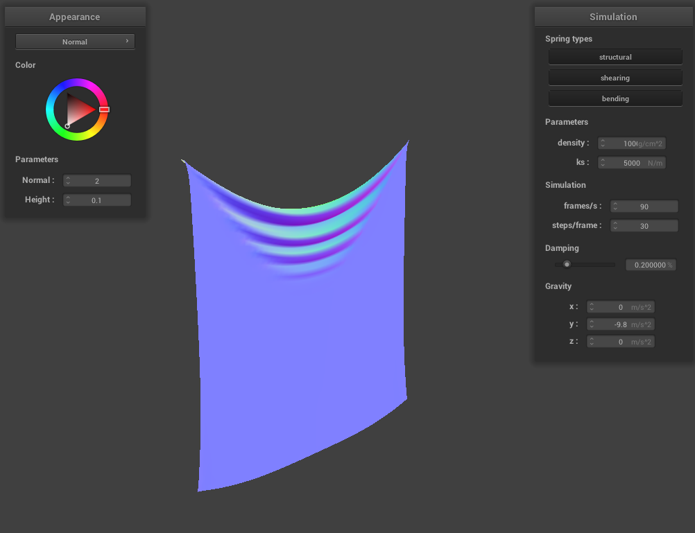
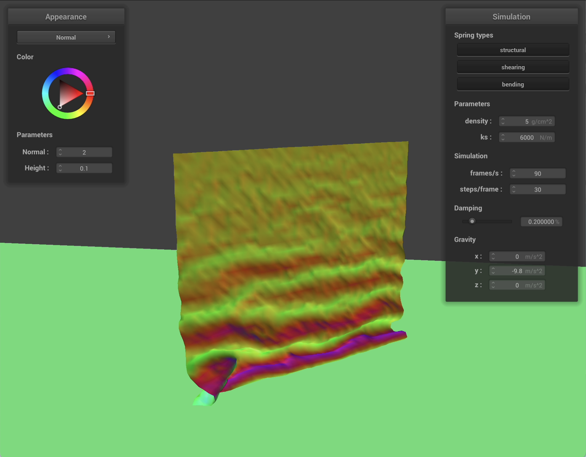
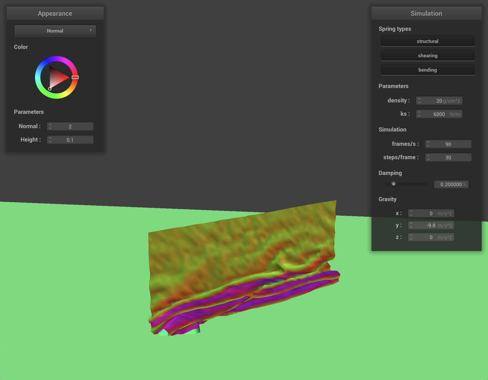
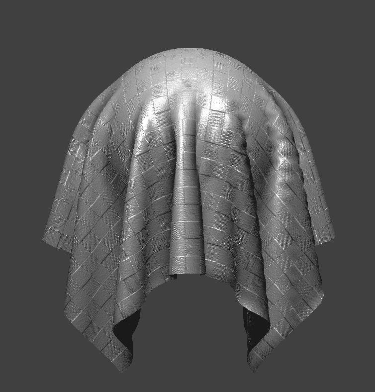
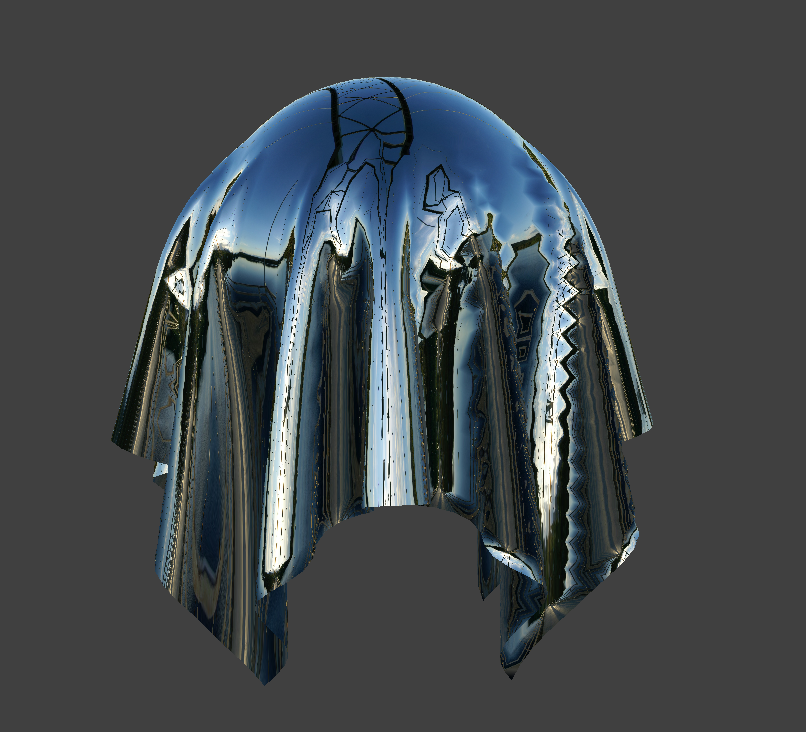

CS184/284A Spring 2025 Homework 4 Write-Up
Link to webpage: https://cal-cs184-student.github.io/hw-webpages-mochimochi/hw4/index.html
Link to GitHub repository: https://github.com/cal-cs184-student/sp25-hw4-gwvc/tree/one-through-four
Overview
Give a high-level overview of what you implemented in this homework. Think about what you've built as a whole. Share your thoughts on what interesting things you've learned from completing the homework.Part 1: Masses and springs
Below are screenshots of scene/pinned2.json from a viewing angle where the cloth wireframe is clear to show the structure of the point masses and springs.
|
|
|
Below we show what the wireframe looks like (1) without any shearing constraints, (2) with only shearing constraints, and (3) with all constraints.
|
|
|

|
Part 2: Simulation via numerical integration
The parameters of the simulation have a large effect on the appearance of the cloth during the simulation. The spring constant ks dictates the stiffness of the springs connecting the point masses. When we set ks to a low value (100 N/m), we observe more ripples in the cloth and a large sag in the cloth in between the pinned corners. When we set ks to a large value (100000 N/m), we observe a lack of ripples throughout the cloth and barely any bend in the cloth between the pinned corners. At a medium ks value (5000 N/m), we begin to observe the formation of large rippes and a divor in the cloth. These images are shown below by sequential ks.
|
|

|
|
The density affects the mass of the system (lower density = lighter, higher density = heavier). When we use a low density (1 g/cm2), we observe the cloth does not fold as easily, due to the larger impact of the springs. When a high density is used (1000 g/cm2), we observe the cloth folds more, as the weight stretches the springs.
|
|

|
Damping effects the energy loss over time. When a very low damping coefficient is used (~0.01), we observe the cloth looks very elastic and bouncy, oscillating back and forth and taking a very long time to rest. The cloth looks very light. When a high damping coefficient is used (~0.8), we observe the cloth looks very stiff and slow. It doesn't oscillate at all and settles into its rest position without much motion. Below, we show three snapshots from each simulation to highlight the differences between the two parameters.
|
|
|
|
|
|
|
|
Below, we show a screenshot of the shaded cloth from scene/pinned4.json in its final resting state.
Part 3: Handling collisions with other objects
The implementation for handling collisions with other objects involves first checking whether the point mass is either inside the sphere or has passed the plane. To check whether the point mass is inside the sphere, we calculate the distance vector between the origin of the sphere and the point mass, and if that distance is smaller than the radius of the sphere, then we know the point is inside the sphere. To check whether the point mass has passed the plane, we calculate which side of the plane the point mass is on, both at the current time step and the previous timestep. If the two locations are on different sides of the plane, then we know the point mass has crossed the plane. If the point mass has collided with the object, then we compute where the tangent point is, and find the correction vector that will be applied to the last position of the point mass to reach that tangent point. Then, the current position of the point mass is updated by the correction vector, scaled by a friction value.
Below, we show screenshots of the shaded cloth from scene/sphere.json in its final resting state using ks = 500, 5000, and 50000. We observe that at ks = 500, the cloth almost perfectly conforms to the shape of the sphere, resulting in a spherical shape. At ks = 5000, the cloth doesn't conform as well to the spherical shape, with only a bit of the top showing the round underlying shape of the object. At ks = 50000, the spring constant is very large, and therefore the cloth has more stiffness. This results in the cloth sittingly bulkily on top of the sphere. It is no longer clear what the shape of the object the cloth is covering looks like. The lower the ks, the more the cloth conforms to the shape of the object it is covering.
|
|
|
|
Below is a screenshot of the shaded cloth lying peacefully at rest on the plane.
Part 4: Handling self-collisions
For self-collisions, we implented spatial hashing to help efficiently detect point masses close to another point mass. At each time step, we built a spatial map by hashing the position of each point mass in a 3D grid cell. The 3D grid cell was constructed by partitioning the 3D space in 3D boxes. For each point mass, we looked up nearby candidates in the same grid cell. If the candidate is too close to the point mass (2 * thickness), we constructed a correction vector to separate the point mass from the candidate. To find the final correction vector, we averaged all the corrections for the grid point and scaled them to improve accuracy.
Varying density affects the mass of each point in the cloth, making the cloth fall faster and with more force when density is high, which increases the likelihood and intensity of collisions and folding. Lower density results in a lighter, floatier cloth that falls more gently and reacts more slowly. The first two rows of images show the self-collision of cloths with lower density while the third and fourth rows show the self-collision of cloths with higher density. The ks parameter, which controls the spring stiffness, determines how strongly the cloth resists deformation—higher ks results in a stiffer cloth that better maintains its shape and resists stretching or folding, while lower ks creates a softer, more flexible cloth that bends and collapses more easily. Comparing row 1 and 2, you can see that row 2, which has a higher ks, has less wrinkles especially in the seond image from the left. Together, these parameters shape how realistic and dynamic the cloth appears during self-collision.
Below, I show 4 screenshots documenting how the cloth falls and folds on itself. The camera angle was adjusted to allow for closer viewing.
| density = 5, ks = 2000 | |||
| density = 5, ks = 6000 | |||
|  | |||
| density = 20, ks = 2000 | |||

|
|||
| density = 20, ks = 6000 | |||

|
 | ||
Part 5: Shaders
- A shader program consists of code that runs on the GPU to process 3D data and generate images.
The vertex shader handles vertex data, transforming it from model space to screen space and passing along information like positions, normals, and texture coordinates.
The fragment shader then processes each potential pixel (fragment), using this information to apply lighting and material effects, such as diffuse and specular lighting, textures, and reflections. Together, these shaders create realistic visual effects by transforming geometry and calculating how light interacts with the surface, resulting in the final color and appearance of each pixel on the screen. - The Blinn-Phong shading model calculates lighting with three components: ambient, diffuse, and specular. It uses a halfway vector for specular reflections, offering efficient and realistic lighting by simulating how light interacts with surfaces.
-
Texture mapping
-
Comparison of Bump Mapping and Displacement Mapping
With a lower mesh resolution (e.g., -o 16 -a 16), the surface appears less smooth and less detailed, and as a result, the bump mapping may look less effective. With a higher mesh resolution (e.g., -o 128 -a 128), the surface becomes smoother, and the bump mapping can simulate finer details.
 Bump, mesh coarseness 16
Displacement, mesh coarseness 16
Bump, mesh coarseness 128
Displacement, mesh coarseness 128
-
Mirror shader
 -
Custom shader - CD rainbow irredescent
Since our final project group wants to work on structural color that kind of has an irredescent effect, I wanted to try implementing an irredescent shader. This shader creates a dynamic, rainbow-colored effect on an object, where the colors pulse over time based on the fragment's position and normal. The color oscillates through the rainbow spectrum, with the intensity modulated by a sinusoidal pulse that varies based on the fragment's distance from the origin.

|
Ambient component |
Diffuse component |
Specular component |
Entire Blinn-Phong model |